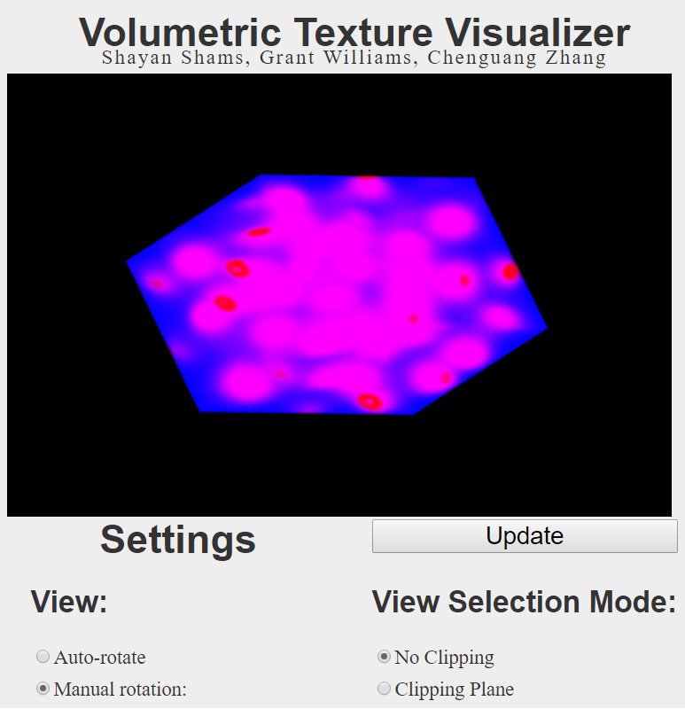

Volumetric Texture Visualizer: Readme
Shayan Shams, Grant Williams, Chenguang Zhang
Table of Contents
- Objective
- Screenshot
- Interactions
- Methodology
- Implementation
- Performance
- Future Work
- Known Issues
Objective
This is the volumetric texture implementation project assigned for the Scientifict Information Visualization. We were tasked to do the following:
- Visualize a given scalar volume data set using 2D or 3D texture mapping.
- Display the data using a color map.
- Use texture mapping to implement the color map, and filter the textures.
- Support planar and box clipping.
- Provide a user interface.
We provided these features as follows:
- We implemented both 2D and 3D texture mapping, but both are subject to some limitations
- We used a color map, with an aesthetically pleasing transfer function and transparency.
- We generated color maps and uploaded them as textures. We used bilinear filtering, as provided by OpenGL. Additionally, we implemented our own special texture filtering for 3D textures
- We support both planar and box clipping, subject to one issue listed below.
- We provide a graphical user interface using HTML forms for convenient feature discovery.
Screenshot

Interactions and Features
The user has the following options:
- View options: either allow the volume to smoothly auto-rotate around the Y axis, or allow the user to manually specify the degrees to rotate around each axis (Euler angles).
- Texture mode: allows the user to use 2D or 3D visualization. This is subject to limitations as listed below.
- Clipping mode: allows the user to select between no clipping, plane-based clipping, and box clipping. For plane clipping, 6 planes are availible. Each axis has two planes, one which bounds the volume from above (the positive plane) and one which bounds from below (the negative plane). For box based clipping, the user can select the x, y, z coordinate of the least-significant vertex of the clipping box, along with the number of layers, rows, and columns to be visible. Fractional values are allowed. Clipping is subject to some limitations which are described below. In particular, Z-coordinate-based clipping parameters do not work correctly. The labels of these parameters are displayed in brown.
Methodology
Samples
The input texture
Transfer function:
Slice generation
2D slices are object-aligned and work according to the technique we learned in class. First, a texture is generated for each slice based on the transfer function.
Features
Implementation
Texture processing
Known Issues